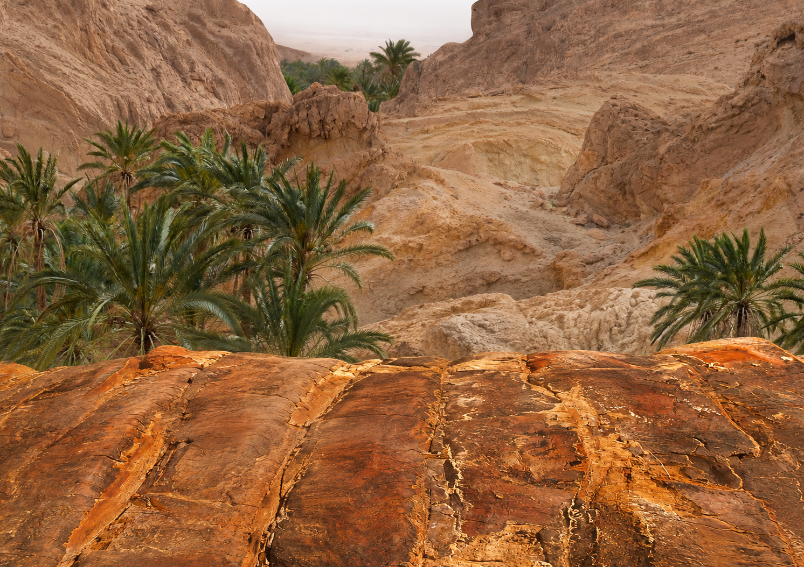
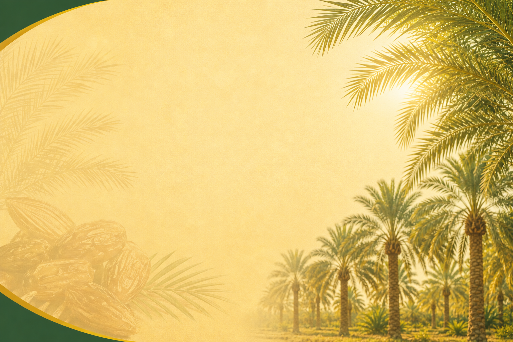

01
Production
Nous développons une production agricole tunisienne adaptée à la qualité et aux exigences du marché.
QUI SOMMES-NOUS ?
Les Meilleures Dattes
STÉ BEN LARIBI & CO
Nous sommes la STÉ BEN LARIBI & CO (BEN LARIBI DATTES), une entreprise tunisienne spécialisée dans la production, le conditionnement et l'exportation de dattes, fruits et légumes.
Notre activité porte particulièrement sur les dattes Deglet Nour de Tunisie, proposées sous différentes formes selon les besoins des marchés et des clients.

NOTRE SAVOIR-FAIRE
Nous développons une production agricole tunisienne adaptée à la qualité et aux exigences du marché.
Nous préparons nos produits selon les formats demandés par nos clients et les marchés ciblés.
Nous sélectionnons les dattes et les produits agricoles selon des critères de qualité et de fiabilité.
Nous exportons nos dattes sélectionnées vers des clients en Europe, en Asie et en Afrique.
Nous restons à l'écoute des besoins de nos partenaires pour mieux répondre à leurs attentes.
NOS DATTES
Des dattes en branches dans une présentation naturelle et premium.
DécouvrirDes dattes standards et en vrac adaptées aux besoins commerciaux et industriels.
DécouvrirDes formats conditionnés pour la distribution et les marchés de détail.
DécouvrirKÉBILI
Nos bureaux et notre usine sont situés au sud tunisien, au cœur de l'Oasis de Kébili.

MONDE
Nous exportons nos dattes sélectionnées vers des clients en Europe, en Asie et en Afrique.
NOTRE ENGAGEMENT QUALITÉ
OUR MISSION
Notre mission est de proposer des produits agricoles tunisiens sélectionnés avec soin, de répondre aux exigences de nos clients et de développer des relations commerciales durables sur les marchés internationaux.
CTA
Contactez BEN LARIBI DATTES pour discuter de vos besoins en produits et conditionnement.